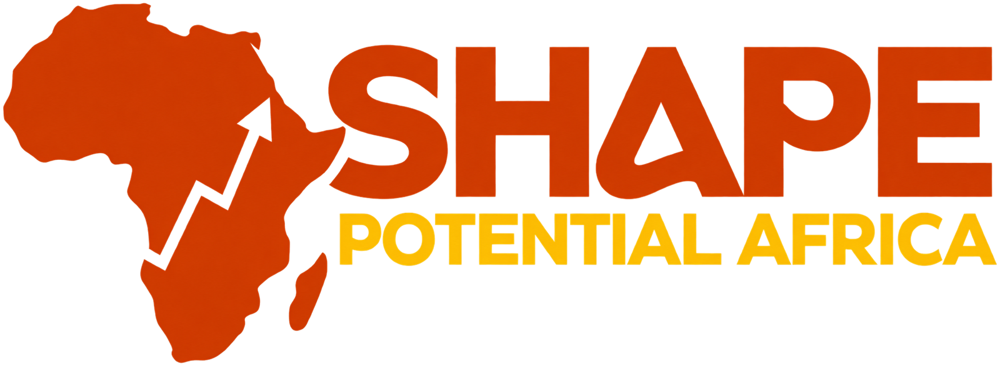

Our vision
To transform Africa’s human potential into innovative, ethical and sustainable solutions through leadership, education, technology, entrepreneurship and agriculture.

We give young people, women and institutions across Africa the tools, training and opportunities to grow.
SHAPE Potential Africa is a Community Benefit Company founded in 2026. We believe Africa’s greatest resource is its people.
We work across five areas: technology, education, leadership, young startups and agriculture. Our programmes help people learn new skills, start and grow businesses, and lead with integrity. Any surplus we make goes back into our work and the communities we serve.
To transform Africa’s human potential into innovative, ethical and sustainable solutions through leadership, education, technology, entrepreneurship and agriculture.
To empower African youth, women and institutions with tools, training and opportunities that foster creativity, economic growth and community resilience.
The letters in our name stand for what we believe in.
Serving communities and partners with integrity.
Working with modesty, respect and openness to learning.
Being open and responsible in everything we do.
Making the most of every resource to create real impact.
Holding ourselves to the highest standard.
Our work is organised around five pillars.
Digital skills, AI and robotics training so young people and institutions can take part in the digital economy.
Training teachers, improving curricula and bringing quality learning to underserved communities.
Growing principled, people-centred leaders through training, camps and mentorship.
Helping young founders turn ideas into businesses and connecting them with investors and markets.
Modern farming skills and market access, so agriculture becomes a real career for youth and women.
We are looking for partners, trainers and mentors in every pillar.
Get involvedTargets from our ten-year plan.
people trained in our first programmes
by 2029young people trained
by 2031people reached across Africa
by 2033startups supported
by 2033African countries
by 2035of participants are women or from marginalised groups
in every projectHow we plan to grow from 2026 to 2036.
Building our team, governance and digital systems, opening our first centre and listening to the communities we will serve.
Launching digital skills programmes and robotics labs, training 200 teachers, running startup bootcamps and setting up demonstration farms with youth cooperatives.
Opening offices in East, West and Central Africa, bringing the Academy to 10 universities and hosting our first Pan-African Youth Innovation and Leadership Summit.
Training local trainers, launching an online learning and mentorship platform, and starting a fund for youth startups and agribusiness.
Forming global partnerships, hosting an annual innovation investment summit and supporting alumni to lead national chapters.
Opening the African Innovation and Leadership Institute, creating an endowment fund and sharing our ten-year impact report.
We are a Community Benefit Company. Our main goals are social, so any surplus is put back into our programmes and the communities we work with instead of being paid out for private gain. Every year we publish a benefit report that shows what we did and what it achieved.
There are three ways to be part of SHAPE Potential Africa.
For institutions, funders and companies who want to build programmes with us.
For young people, women, teachers and founders who want to learn and grow.
For experienced professionals who want to share what they know.